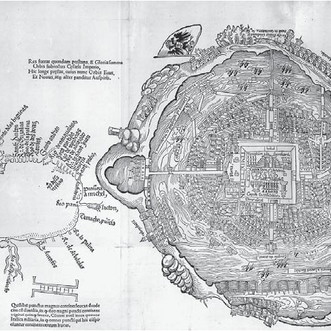
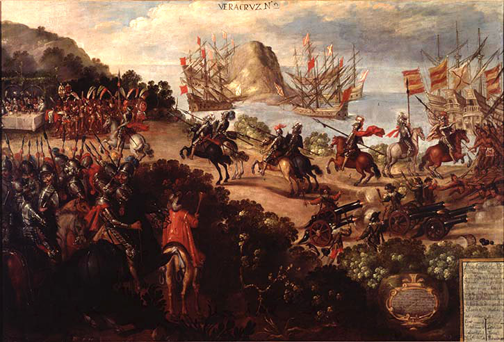

In February 1519, Hernán Cortés landed in Vera Cruz, an Aztec city and coincidentally, the first Spanish city. Tenochtitlan, the largest Aztec city, was built on Lake Texcoco and it was estimated to have covered 14 square kilometers.
The city was connected to the shore by 3 massive causeways which were each large enough to carry 10 horses side-by-side. The Aztecs had also developed a 3km long aqueduct, carrying fresh water from the surrounding hills. Food for the estimated 400,000 people who lived there was grown in floating gardens around the city.
When Cortés landed in Vera Cruz, it aligned perfectly with the prophecy of Quetzacoatl. When a white man with, as described by the natives, “strange beasts” came ashore with an armada of men, Montezuma gave up the empire under the valid assumption of Cortés being the man-god Quetzacoatl. After being brought gifts of gold and silver, Cortés started his reign of terror, marching from town to town and gaining native allies, which were essentially the only reason he won the 93-day long siege of Tenochtitlan.
After the burning of many cities, the deaths of tens of thousands of natives, and the draining of Lake Texcoco, the Aztec Empire had fallen and Spain took control of Mexico.